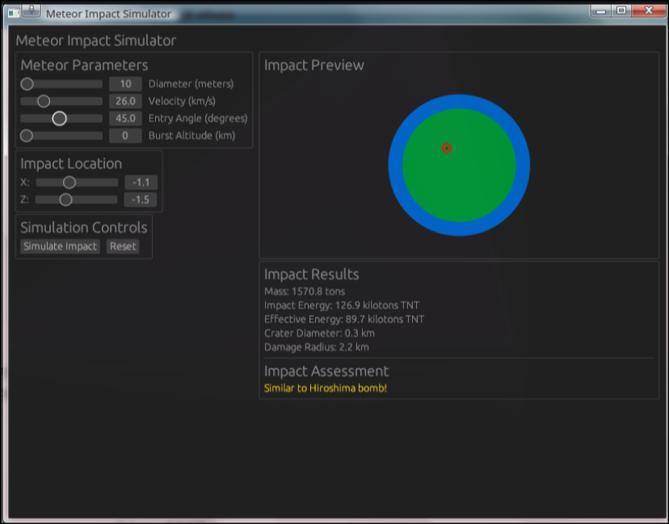

Metario
I joined a competition with classmates for the NASA International Apps Challenge hackathon, where I served as the sole programmer. Although our team didn't place, I learned a valuable lesson about presenting our work to the judges in person. Since then, I've decided to make this project open source for everyone to use.
Technical Details
Metario is written in Rust 🦀 and uses fundamental physics functions to calculate meteor impact information. I derived these functions from scientific data provided by my teammates. The application simulates meteor trajectories using a 2D model created with the egui library. (I initially attempted a 3D animation using the kiss3d library, but encountered technical issues and lacked time to complete it.) The simulator can compare results with historical events such as the Hiroshima bombing.
Libraries Used:
- Egui
- Color32
- std::sync::{Arc, Mutex}
What I Learned
- Improved my ability to read and interpret scientific data more effectively
- Developed proficiency with egui, including color management and UI design
- Enhanced my Rust programming skills
- Gained practical experience with physics simulations and calculations
Future Improvements
The primary goal is to implement a 3D simulation to replace the current 2D model. Additionally, I plan to verify the physics calculations and review the scientific functions for accuracy.
